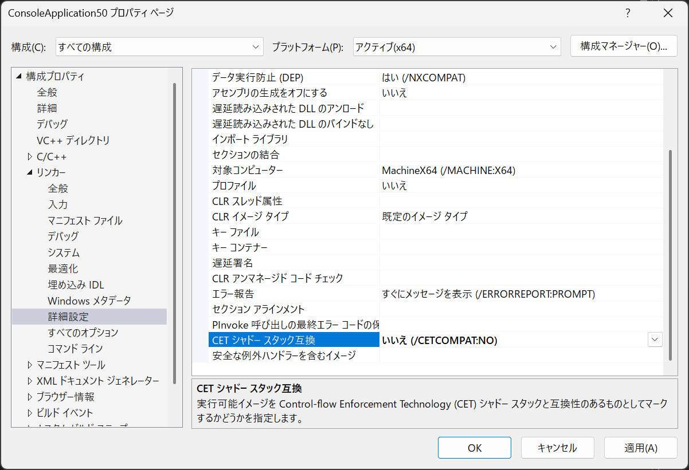
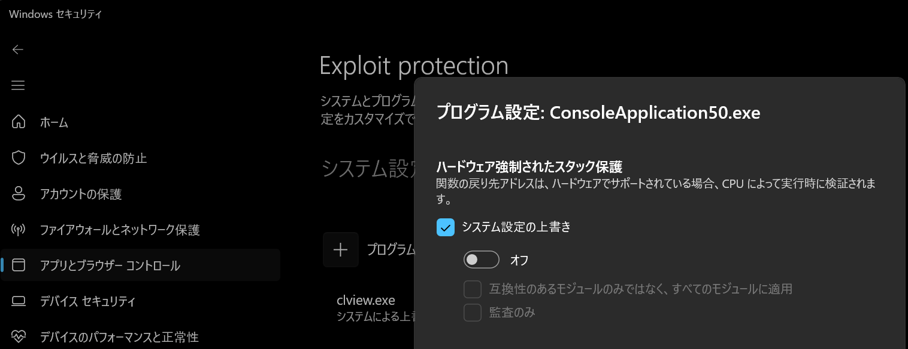

こんにちは、Japan Developer Support Core チームです。 今回は、制御フロー強制テクノロジー (CET) が有効なプロセスで .NET Framework のコードを実行した場合に発生し得る問題についてご案内します。
はじめに
制御フロー強制テクノロジー (Control Flow Enforcement Technology / CET) は、Intel および AMD が提供するハードウェア セキュリティ機能です。CET はシャドウ スタック (Shadow Stack) と間接分岐追跡 (Indirect Branch Tracking / IBT) の 2 つのメカニズムによって、リターン指向プログラミング (ROP) 攻撃や Jump-Oriented Programming (JOP) 攻撃などの制御フロー乗っ取り攻撃を防ぎます。
シャドウ スタックは通常のスタックとは独立したメモリ領域に関数の戻りアドレスのコピーを保持します。関数からのリターン時に、プロセッサは通常スタックの戻りアドレスとシャドウ スタックの戻りアドレスが一致することを確認します。一致しない場合、プロセッサはセキュリティ違反として処理を停止します。
Windows 11 をはじめとする比較的新しい環境では、CET 対応のハードウェア上で一部のシステム プロセスに対して CET が有効化されています。また、アプリケーション開発においても CET 対応が広まっており、 .NET 9 以降では CET 互換が既定で有効 になっています。
発生する問題
CET が有効なプロセスで .NET Framework のコードを実行している際に、マネージド例外が発生すると、例外ハンドラーが定義されているにもかかわらずプロセスが例外コード STATUS_STACK_BUFFER_OVERRUN (0xC0000409) およびサブコード FAST_FAIL_SET_CONTEXT_DENIED (0x30) により強制終了 (fastfail) される場合があります。例えば、NullReferenceException が発生し try-catch ブロックで捕捉しようとしているケースでも、例外ハンドラーへの復帰が行われずプロセスが異常終了します。
この問題は .NET Framework 単体で動作するアプリケーション (EXE が .NET Framework であるケース) では通常は発生しません。 CET が有効なプロセスから .NET Framework のコードを呼び出しているシナリオ で影響を受けます。具体的には以下のような状況が挙げられます。
- COM 相互運用経由の呼び出し: ネイティブ アプリケーションや .NET 9 以降のアプリケーションが、.NET Framework でビルドされたクラス ライブラリを COM コンポーネントとして呼び出している
- CLR Hosting API 経由の呼び出し: ネイティブ アプリケーションが CLR Hosting API (
ICLRRuntimeHost等) を使用して .NET Framework のランタイムをホストし、マネージド コードを実行している
.NET 9 以降では CET 互換が既定で有効なため、.NET 9 以降のアプリケーションから .NET Framework のコードを呼び出している場合には特にご注意ください。
このとき、イベント ビューアーの Application ログに以下のようなエラーが記録されます。
[Windows ログ] > [Application]
ソース: Application Error, イベント ID: 1000
障害が発生したモジュール名として、検証エラーを検出して fastfail した ntdll.dll が記録されます。また、例外コードは 0xC0000409 (STATUS_STACK_BUFFER_OVERRUN) となります。
1
2
3
4
5
6
7
8
9
10
11障害が発生しているアプリケーション名: NativeConsoleApp.exe、バージョン: 0.0.0.0、タイム スタンプ: 0x6a789571
障害が発生したモジュール名: ntdll.dll、 バージョン: 10.0.26100.8875、タイム スタンプ: 0xba65e4a2
例外コード: 0xc0000409
フォールト オフセット: 0x000000000011f216
フォールト プロセス ID: 0xB098
アプリケーションのフォールトの開始時刻: 0x1DD280FC5612CF1
Faulting アプリケーション パス: C:\source\repos\Repro_SetContextDenied\x64\CETCompat\NativeConsoleApp.exe
Faulting モジュール パス: C:\WINDOWS\SYSTEM32\ntdll.dll
Report Id: d696db0c-dde6-4e42-b70a-54fcefe36da1
Faulting パッケージの完全名:
Faulting パッケージ相対アプリケーション ID:ソース: Windows Error Reporting, イベント ID: 1001
例外コード 0xc0000409 (STATUS_STACK_BUFFER_OVERRUN) に加えて、サブコードとして 0x00000030 (FAST_FAIL_SET_CONTEXT_DENIED) が記録されます。
1
2
3
4
5
6
7
8
9
10
11
12
13
14
15
16障害バケット 1299601207904101592、種類 5
イベント名: BEX64
応答: 使用不可
Cab ID: 1340475216456855262
問題の署名:
P1: NativeConsoleApp.exe
P2: 0.0.0.0
P3: 6a7894be
P4: ntdll.dll
P5: 10.0.26100.8875
P6: ba65e4a2
P7: 000000000011f216
P8: c0000409
P9: 0000000000000030
P10:[アプリケーションとサービス ログ] > [Microsoft] > [Windows] > [Security-Mitigations] > [カーネル モード]
ソース: Security-Mitigations, イベント ID: 28
検証に失敗したプロセスの名前、PID、検証モード、セット コンテキストの種類などが記録されます。
1
2
3シャドウ スタックのユーザー モードが有効になっているときに命令ポインター検証エラーが発生
したため、プロセス '\Device\HarddiskVolume3\source\repos\Repro_SetContextDenied\x64\CETCompat\NativeConsoleApp.exe' (PID 45208) は設定コンテキストからブロックされました。プロセス セット コンテキスト検証 strict モード: true
セット コンテキストの種類: Exception handling unwindクラッシュ ダンプ ファイルのコールスタック
例外コンテキストから ntdll!RcContinueExit で int 29h 命令 (fastfail) が実行されたことが確認できます。また、コールスタックからは .NET Framework の共通言語ランタイム (clr.dll) が例外処理からの復帰を試みていたことが確認できます。
1
2
3
4
5
6
7
8
9
10
11
12
13
14
15
16
17
18
19
20
21
22
23
24
25
26
27
28
29
30
31
32
33
34
35
36
370:000> .ecxr
rax=00000000c000060a rbx=000000d1c86ff340 rcx=0000000000000030
rdx=0000000000000000 rsi=00007ff8b3ec0928 rdi=000000d1c86ff6b8
rip=00007ff94263f216 rsp=000000d1c86fc260 rbp=000000d1c86fc260
r8=000000d1c86fc258 r9=0000000000000000 r10=0000000000000000
r11=0000000000000246 r12=000000d1c86fed00 r13=0000026777152380
r14=0000026777154ae0 r15=000000d1c86fc980
iopl=0 nv up ei pl zr na pe nc
cs=0033 ss=002b ds=002b es=002b fs=0053 gs=002b efl=00000246
ntdll!RcContinueExit+0x13:
00007ff9`4263f216 cd29 int 29h
0:000> knL
# Child-SP RetAddr Call Site
00 000000d1`c86fc260 00007ff9`1360de75 ntdll!RcContinueExit+0x13
01 (Inline Function) --------`-------- clr!ExceptionTracker::ResumeExecution+0x26
02 000000d1`c86fc2b0 00007ff9`4268481f clr!ProcessCLRException+0x345
03 000000d1`c86fc370 00007ff9`42562103 ntdll!RtlpExecuteHandlerForUnwind+0xf
04 000000d1`c86fc3a0 00007ff9`1360d724 ntdll!RtlUnwindEx+0x283
05 000000d1`c86fd0d0 00007ff9`1360ddfc clr!ClrUnwindEx+0x40
06 000000d1`c86fd5f0 00007ff9`4268479f clr!ProcessCLRException+0x2cc
07 000000d1`c86fd6b0 00007ff9`42565e97 ntdll!RtlpExecuteHandlerForException+0xf
08 000000d1`c86fd6e0 00007ff9`425ad011 ntdll!RtlDispatchException+0x437
09 000000d1`c86fdeb0 00007ff9`3f9f1ada ntdll!RtlRaiseException+0x221
0a 000000d1`c86fece0 00007ff9`1367eb09 KERNELBASE!RaiseException+0x8a
0b 000000d1`c86fede0 00007ff9`1367eb3b clr!NakedThrowHelper2+0x9
0c 000000d1`c86fee10 00007ff9`1367eb45 clr!NakedThrowHelper_RspAligned+0x1e
0d 000000d1`c86ff338 00007ff8`b3ec08eb clr!NakedThrowHelper_FixRsp+0x5
0e 000000d1`c86ff340 00007ff9`136816b3 NetFx48ClassLibrary!NetFx48ClassLibrary.NativeEntryPoints.Foo(System.String)+0x5b
0f 000000d1`c86ff3c0 00007ff9`1353e2db clr!CallDescrWorkerInternal+0x83
10 000000d1`c86ff400 00007ff9`134f682a clr!CallDescrWorkerWithHandler+0x47
11 000000d1`c86ff440 00007ff9`138b54f6 clr!MethodDescCallSite::CallTargetWorker+0xfa
12 (Inline Function) --------`-------- clr!MethodDescCallSite::Call_RetI4+0x15
13 000000d1`c86ff540 00007ff7`ad931385 clr!CorHost2::ExecuteInDefaultAppDomain+0x4a6
14 000000d1`c86ffb90 00007ff9`4124e957 NativeConsoleApp!main+0x265
15 000000d1`c86ffc40 00007ff9`425cad6c kernel32!BaseThreadInitThunk+0x17
16 000000d1`c86ffc70 00000000`00000000 ntdll!RtlUserThreadStart+0x2c
原因
.NET Framework は CET と互換性がありません。 .NET Framework の例外処理メカニズムは CET のシャドウ スタックに対応しておらず、CET が有効な環境では例外処理からの復帰の際にシャドウ スタックの整合性検証に失敗します。これにより、Windows は処理を継続できないと判断し、例外コード STATUS_STACK_BUFFER_OVERRUN (0xC0000409) およびサブコード FAST_FAIL_SET_CONTEXT_DENIED (0x30) によりプロセスを強制終了します。
対処方法
本事象は .NET Framework の実装に起因するものであり、.NET Framework をターゲットにしているクラス ライブラリ側の修正では解決できません。そのため、以下のいずれかの方法によりアプリケーションの CET を無効化する必要があります。
方法 1: ビルド設定で CET 互換フラグを無効にする
ホスト アプリケーションのプロジェクト設定を変更し、ビルド時に CET 互換フラグを無効にする方法です。この設定はアプリケーションの PE ヘッダーの拡張 DLL 特性 (ExtendedDllCharacteristics) に反映されます。
C/C++ プロジェクトの場合
Visual Studio のプロジェクト プロパティから、リンカーの設定で CET 互換フラグを無効にできます。
ソリューション エクスプローラーでプロジェクトを右クリックし、[プロパティ] を開く
[構成プロパティ] → [リンカー] → [詳細設定] を選択する
[CET シャドー スタック互換] を [いいえ (/CETCOMPAT:NO)] に設定する

.NET 9 以降のプロジェクトの場合
.NET 9 以降の SDK スタイル プロジェクトでは、プロジェクト ファイルに <CETCompat>false</CETCompat> プロパティを追加することで CET 互換フラグを無効にできます。
1 | <Project Sdk="Microsoft.NET.Sdk"> |
詳細については、公式ドキュメント「既定でサポートされている CET」をご参照ください。
方法 2: Windows のセキュリティ設定でアプリケーション単位の CET を無効にする
Windows の Exploit Protection 設定から、特定のアプリケーションに対して CET (シャドウ スタック) を無効にすることができます。
Windows セキュリティ を開きます。
[アプリとブラウザーのコントロール] を選択します。
[Exploit Protection の設定] をクリックします。
[プログラム設定] タブを選択します。
対象のアプリケーションの EXE を追加し、 [ハードウェア強制されたスタック保護] で**[システム設定の上書き]** にチェックを入れてトグルを [オフ] にする

注意事項
CET はアプリケーションに対して追加の防御層を提供するセキュリティ機能です。CET を無効にすることは、CET 導入以前のアプリケーションと同様のセキュリティ レベルに戻ることを意味し、既存の動作に新たな脆弱性を持ち込むものではありません。ただし、CET による ROP 攻撃などへの追加の保護が得られなくなる点はご留意ください。
長期的な対処方針
CET はハードウェアおよびオペレーティング システムが提供するセキュリティ機能であり、今後その適用範囲は広がることが想定されます。根本的な解決策として、 .NET Framework のクラス ライブラリを .NET 9 以降へ移行することをお勧めします 。
.NET 9 以降では CET 互換が既定で有効化されており、シャドウ スタックと互換性のある例外処理が実装されています。クラス ライブラリを .NET 9 以降へ移行することで、CET によるセキュリティ上の恩恵を享受しつつ、本問題を根本的に解消できます。
.NET への移行に際しては、以下の公式ドキュメントが参考になります。
まとめ
本記事の内容をまとめます。
- .NET Framework は CET (制御フロー強制テクノロジー) と互換性がなく、CET が有効なプロセスで .NET Framework の例外処理 (例:
NullReferenceException) が発生すると例外コードSTATUS_STACK_BUFFER_OVERRUN(0xC0000409) により強制終了 (fastfail) される場合があります - ネイティブ アプリケーションや .NET 9 以降のアプリケーションが COM 相互運用または CLR Hosting API 経由で .NET Framework のコードを呼び出している場合に影響を受けます
- 対処方法として、C/C++ プロジェクトはリンカー設定 (
/CETCOMPAT:NO)、.NET 9 以降のプロジェクトはプロジェクト ファイルの<CETCompat>false</CETCompat>プロパティでビルド時に CET 互換フラグを無効にするか、Windows のエクスプロイト防止設定でアプリケーション単位のシャドウ スタックを無効にすることができます - 長期的には .NET Framework のクラス ライブラリを .NET 9 以降へ移行することが根本的な解決策となります
本記事が問題の調査や対処の参考になれば幸いです。
本ブログの内容は弊社の公式見解として保証されるものではなく、開発・運用時の参考情報としてご活用いただくことを目的としています。もし公式な見解が必要な場合は、弊社ドキュメント (https://learn.microsoft.com や https://support.microsoft.com) をご参照いただくか、もしくは私共サポートまでお問い合わせください。